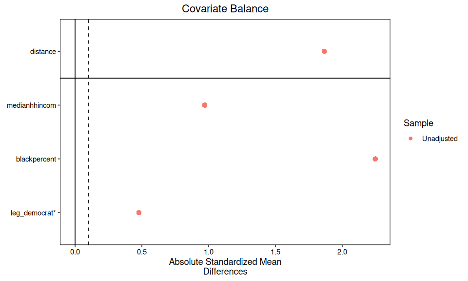
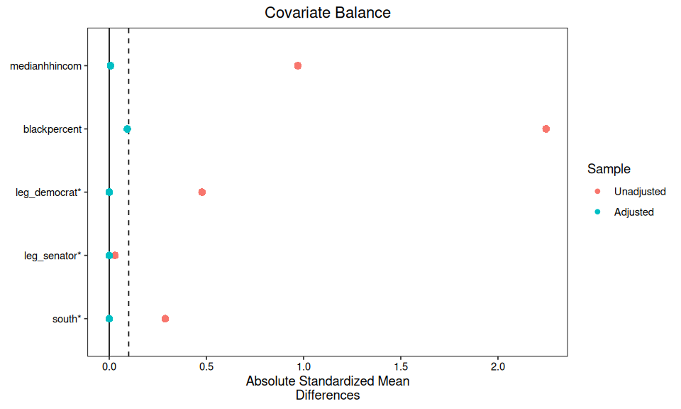
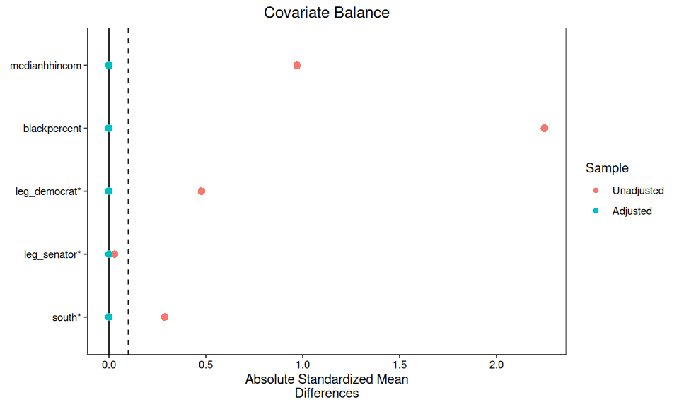

Lab: Black Politicians#
Use the R kernel. Keep the supplied data/ folder beside this notebook. Run cells in order after installing the documented R environment. Data loading is entirely local.
How To Use This Page#
Use this page as a guided worksheet rather than as a finished report.
Read the short framing note for each step.
Run the starter code in your own R session.
Write down what you learn before moving to the next section.
Fill in the comparison table near the end so you can compare designs side by side.
The code is shown but not executed when the website is rendered. That keeps the page readable even if causaldata is not installed yet.
Training Goal#
Practice the design-first workflow from the matching report on a second dataset:
define the estimand before choosing a method
map treatment, outcome, and covariates clearly
diagnose raw imbalance
compare exact matching, CEM, and entropy balancing
interpret the tradeoff between balance, retention, and weight concentration
Dataset At A Glance#
causaldata::black_politicians comes from Broockman (2013), a U.S. field experiment on legislator responsiveness that is also used in the Matching chapter of The Effect.
Observations:
5,593Variables:
14Unit of analysis: one email-to-legislator observation
Built-in randomized factor:
treat_out(whether the email was out-of-district)
The important design feature is that this dataset contains both:
an experimental component:
treat_out, which was randomized in the original studyan observational comparison: legislator characteristics such as
leg_black,leg_democrat, and district composition
That makes it useful for training because you can separate two different questions:
what the original experiment randomized
what you are doing when you instead compare observed groups of legislators
In this lab, we deliberately focus on the second question. We are not estimating the effect of the randomized out-of-district email treatment. Instead, we treat leg_black as the focal training comparison and ask whether Black and non-Black legislators can be made more comparable on a compact set of pre-outcome covariates.
For this training version, we use:
focal training comparison:
leg_blackbinary outcome:
respondedcore design covariates:
medianhhincom,blackpercent,leg_democratextension covariates for later rounds:
leg_senator,south,urbanpercent,totalpop
These variables work well for a matching lab because they mix:
legislator attributes such as party and chamber
district composition measures such as racial composition, income, population, and urbanicity
an observable behavioral outcome,
responded
That structure supports a clear design-first sequence: inspect raw imbalance, test whether literal exact matching is feasible, then compare CEM and entropy balancing under a shared ATT target.
This is best treated as a training example for matching logic, not as a literal policy treatment that could be assigned. leg_black is an observed attribute, so the main teaching value here is design transparency: what comparability would have to mean, where overlap is thin, and how the matched estimand changes as you tighten the design.
Core Design Choice For This Training Aid#
For a first pass, keep the exercise simple and explicit.
Role |
Variable |
Why it is used here |
|---|---|---|
Treatment |
|
Focal comparison for the matching exercise |
Outcome |
|
Whether the legislator replied |
Estimand |
|
Average difference for the Black-legislator group |
Core covariates |
|
Compact set that captures district resources, district racial composition, and party |
Extension covariates |
|
Useful once the basic workflow is clear |
Post-design modeling variable |
|
Part of the original study design; add it after you understand the basic matched comparison |
Why not start with every variable at once? Because this page is meant to train judgement, not to hide the design behind a long formula.
Suggested Session Flow#
If you are teaching this live, a simple 35-45 minute structure works well:
5 minutes: frame the question and walk through the variable map10 minutes: run raw descriptives and balance diagnostics5 minutes: try exact matching and discuss why it struggles10 minutes: run CEM and inspect the retention-versus-balance tradeoff10 minutes: run entropy balancing and inspect effective sample size5 minutes: compare designs and decide which one you would defend
Step 1: Load The Data#
Start by loading the packages, bringing in the data, and creating a compact analysis object.
options(repr.plot.width = 8, repr.plot.height = 4.8)
data_helpers <- c("data/load-data.R", "../data/load-data.R", "docs/labs/data/load-data.R")
data_helpers <- data_helpers[file.exists(data_helpers)]
if (!length(data_helpers)) stop("Extract the complete lab ZIP, including its data folder, before running.")
source(data_helpers[[1]])
options(repr.plot.width = 8, repr.plot.height = 4.8)
required_packages <- c(
"MatchIt",
"WeightIt",
"cobalt",
"dplyr",
"ggplot2"
)
missing_packages <- required_packages[!vapply(
required_packages,
requireNamespace,
logical(1),
quietly = TRUE
)]
if (length(missing_packages) > 0) {
stop("Install the documented R environment first; missing: ", paste(missing_packages, collapse=", "), call.=FALSE)
}
invisible(lapply(required_packages, library, character.only = TRUE))
dat <- qed_data("black_politicians") |>
mutate(
treat = as.integer(leg_black),
outcome = as.integer(responded)
)
design_covariates <- c("medianhhincom", "blackpercent", "leg_democrat")
dat |>
select(treat, outcome, treat_out, all_of(design_covariates)) |>
glimpse()
cobalt (Version 4.6.2, Build Date: 2026-01-29)
Attaching package: ‘cobalt’
The following object is masked from ‘package:MatchIt’:
lalonde
Attaching package: ‘dplyr’
The following objects are masked from ‘package:stats’:
filter, lag
The following objects are masked from ‘package:base’:
intersect, setdiff, setequal, union
Rows: 5,593
Columns: 6
$ treat <int> 0, 0, 0, 0, 0, 0, 0, 0, 0, 0, 0, 0, 0, 0, 0, 0, 0, 0, 0,…
$ outcome <int> 0, 1, 1, 1, 1, 0, 1, 0, 1, 0, 1, 0, 0, 1, 0, 1, 0, 0, 1,…
$ treat_out <dbl> 0, 0, 0, 0, 1, 1, 1, 0, 0, 1, 0, 1, 1, 0, 1, 0, 1, 1, 1,…
$ medianhhincom <dbl> 5.0625, 4.9713, 6.9646, 4.1811, 3.1152, 6.0678, 5.5030, …
$ blackpercent <dbl> 0.007119007, 0.005796029, 0.012028725, 0.004279866, 0.00…
$ leg_democrat <dbl> 0, 0, 0, 0, 1, 0, 1, 1, 0, 1, 1, 1, 0, 0, 0, 1, 1, 0, 0,…
Checkpoint:
Is the treatment binary?
Is the outcome binary?
Are the matching covariates measured before the outcome?
Step 2: Describe The Raw Comparison#
Do not start with a matching algorithm. First check whether the untreated group looks remotely comparable to the treated group on the covariates you care about.
options(repr.plot.width = 8, repr.plot.height = 4.8)
raw_summary <- dat |>
group_by(treat) |>
summarise(
n = n(),
response_rate = mean(outcome, na.rm = TRUE),
mean_income = mean(medianhhincom, na.rm = TRUE),
mean_blackpercent = mean(blackpercent, na.rm = TRUE),
prop_democrat = mean(leg_democrat == 1, na.rm = TRUE),
.groups = "drop"
) |>
mutate(group = if_else(treat == 1L, "Black legislators", "Non-Black legislators")) |>
select(group, n, response_rate, mean_income, mean_blackpercent, prop_democrat)
raw_summary
| group | n | response_rate | mean_income | mean_blackpercent | prop_democrat |
|---|---|---|---|---|---|
| <chr> | <int> | <dbl> | <dbl> | <dbl> | <dbl> |
| Non-Black legislators | 5229 | 0.4249378 | 4.434909 | 0.06269056 | 0.5006693 |
| Black legislators | 364 | 0.3928571 | 3.329848 | 0.51658989 | 0.9780220 |
What to look for:
large differences in
medianhhincomlarge differences in
blackpercentmajor party imbalance on
leg_democrat
If the raw groups are far apart, that does not mean matching will fail, but it does mean the burden on the design is real.
Step 3: Baseline Balance Diagnostics#
Use MatchIt with method = NULL to get a formal pre-adjustment balance benchmark.
options(repr.plot.width = 8, repr.plot.height = 4.8)
m_raw <- matchit(
treat ~ medianhhincom + blackpercent + leg_democrat,
data = dat,
method = NULL,
estimand = "ATT"
)
summary(m_raw, un = TRUE)
cobalt::bal.tab(m_raw, un = TRUE, m.threshold = 0.1)
cobalt::love.plot(
m_raw,
abs = TRUE,
thresholds = c(m = 0.1),
stars = "raw"
)
Call:
matchit(formula = treat ~ medianhhincom + blackpercent + leg_democrat,
data = dat, method = NULL, estimand = "ATT")
Summary of Balance for All Data:
Means Treated Means Control Std. Mean Diff. Var. Ratio eCDF Mean
distance 0.6399 0.0251 1.8660 13.4706 0.4720
medianhhincom 3.3298 4.4349 -0.9706 0.6631 0.2596
blackpercent 0.5166 0.0627 2.2474 4.3982 0.4807
leg_democrat 0.9780 0.5007 3.2559 . 0.4774
eCDF Max
distance 0.8449
medianhhincom 0.4130
blackpercent 0.8224
leg_democrat 0.4774
Sample Sizes:
Control Treated
All 5229 364
Matched 5229 364
Unmatched 0 0
Discarded 0 0
Balance Measures
Type Diff.Un M.Threshold.Un
distance Distance 1.8660
medianhhincom Contin. -0.9706 Not Balanced, >0.1
blackpercent Contin. 2.2474 Not Balanced, >0.1
leg_democrat Binary 0.4774 Not Balanced, >0.1
Balance tally for mean differences
count
Balanced, <0.1 0
Not Balanced, >0.1 3
Variable with the greatest mean difference
Variable Diff.Un M.Threshold.Un
blackpercent 2.2474 Not Balanced, >0.1
Sample sizes
Control Treated
All 5229 364
{kind=link}

Checkpoint:
Which covariate is least balanced?
Are any absolute standardized mean differences already below
0.1?If balance is poor, is the problem modest or structural?
Step 4: Exact Matching Feasibility Check#
Exact matching is easiest to explain, but it becomes restrictive quickly. Use a reduced discrete specification to show both its appeal and its limits.
options(repr.plot.width = 8, repr.plot.height = 4.8)
m_exact <- matchit(
treat ~ leg_democrat + leg_senator + south,
data = dat,
method = "exact",
estimand = "ATT"
)
summary(m_exact, un = TRUE)
exact_dat <- match.data(m_exact)
exact_dat |>
count(treat) |>
mutate(group = if_else(treat == 1L, "Treated", "Control"))
Call:
matchit(formula = treat ~ leg_democrat + leg_senator + south,
data = dat, method = "exact", estimand = "ATT")
Summary of Balance for All Data:
Means Treated Means Control Std. Mean Diff. Var. Ratio eCDF Mean
leg_democrat 0.9780 0.5007 3.2559 . 0.4774
leg_senator 0.2363 0.2658 -0.0696 . 0.0296
south 0.5385 0.2503 0.5780 . 0.2881
eCDF Max
leg_democrat 0.4774
leg_senator 0.0296
south 0.2881
Summary of Balance for Matched Data:
Means Treated Means Control Std. Mean Diff. Var. Ratio eCDF Mean
leg_democrat 0.9780 0.9780 0 . 0
leg_senator 0.2363 0.2363 -0 . 0
south 0.5385 0.5385 0 . 0
eCDF Max Std. Pair Dist.
leg_democrat 0 0
leg_senator 0 0
south 0 0
Sample Sizes:
Control Treated
All 5229. 364
Matched (ESS) 1637.83 364
Matched 5059. 364
Unmatched 170. 0
Discarded 0. 0
| treat | n | group |
|---|---|---|
| <int> | <int> | <chr> |
| 0 | 5059 | Control |
| 1 | 364 | Treated |
What to discuss:
Exact matching is transparent because every retained comparison is literal on the chosen variables.
It will usually ignore important continuous differences unless you bin them first.
If many treated units are dropped, the estimand begins to drift toward “the treated units for whom exact matches exist.”
Step 5: Build A CEM Version#
CEM relaxes exact matching by coarsening continuous covariates into bins. That usually improves feasibility while keeping the matching logic visible.
options(repr.plot.width = 8, repr.plot.height = 4.8)
create_even_breaks <- function(x, n) {
min_x <- min(x, na.rm = TRUE)
max_x <- max(x, na.rm = TRUE)
min_x + ((0:n) / n) * (max_x - min_x)
}
cem_cutpoints <- list(
medianhhincom = quantile(dat$medianhhincom, probs = (0:6) / 6, na.rm = TRUE),
blackpercent = create_even_breaks(dat$blackpercent, 6)
)
m_cem <- matchit(
treat ~ medianhhincom + blackpercent + leg_democrat + leg_senator + south,
data = dat,
method = "cem",
estimand = "ATT",
cutpoints = cem_cutpoints
)
summary(m_cem, un = TRUE)
cobalt::bal.tab(m_cem, un = TRUE, m.threshold = 0.1)
cobalt::love.plot(
m_cem,
abs = TRUE,
thresholds = c(m = 0.1),
stars = "raw"
)
Call:
matchit(formula = treat ~ medianhhincom + blackpercent + leg_democrat +
leg_senator + south, data = dat, method = "cem", estimand = "ATT",
cutpoints = cem_cutpoints)
Summary of Balance for All Data:
Means Treated Means Control Std. Mean Diff. Var. Ratio eCDF Mean
medianhhincom 3.3298 4.4349 -0.9706 0.6631 0.2596
blackpercent 0.5166 0.0627 2.2474 4.3982 0.4807
leg_democrat 0.9780 0.5007 3.2559 . 0.4774
leg_senator 0.2363 0.2658 -0.0696 . 0.0296
south 0.5385 0.2503 0.5780 . 0.2881
eCDF Max
medianhhincom 0.4130
blackpercent 0.8224
leg_democrat 0.4774
leg_senator 0.0296
south 0.2881
Summary of Balance for Matched Data:
Means Treated Means Control Std. Mean Diff. Var. Ratio eCDF Mean
medianhhincom 3.2240 3.2158 0.0072 1.1333 0.0091
blackpercent 0.4894 0.4706 0.0930 0.9095 0.0253
leg_democrat 0.9733 0.9733 0.0000 . 0.0000
leg_senator 0.1733 0.1733 0.0000 . 0.0000
south 0.6100 0.6100 0.0000 . 0.0000
eCDF Max Std. Pair Dist.
medianhhincom 0.0623 0.4303
blackpercent 0.1007 0.2973
leg_democrat 0.0000 0.0000
leg_senator 0.0000 0.0000
south 0.0000 0.0000
Sample Sizes:
Control Treated
All 5229. 364
Matched (ESS) 79.52 300
Matched 3110. 300
Unmatched 2119. 64
Discarded 0. 0
Balance Measures
Type Diff.Un Diff.Adj M.Threshold
medianhhincom Contin. -0.9706 0.0072 Balanced, <0.1
blackpercent Contin. 2.2474 0.0930 Balanced, <0.1
leg_democrat Binary 0.4774 0.0000 Balanced, <0.1
leg_senator Binary -0.0296 0.0000 Balanced, <0.1
south Binary 0.2881 0.0000 Balanced, <0.1
Balance tally for mean differences
count
Balanced, <0.1 5
Not Balanced, >0.1 0
Variable with the greatest mean difference
Variable Diff.Adj M.Threshold
blackpercent 0.093 Balanced, <0.1
Sample sizes
Control Treated
All 5229. 364
Matched (ESS) 79.52 300
Matched (Unweighted) 3110. 300
Unmatched 2119. 64
{kind=link}

Questions to answer after running it:
How much better is balance than in the raw sample?
How many treated units are retained?
Which binning choices matter most for the result?
Step 6: Try Entropy Balancing#
Entropy balancing keeps the treated group intact and reweights the controls. That often gives excellent balance, but the price can be concentrated weights and a smaller effective control sample.
options(repr.plot.width = 8, repr.plot.height = 4.8)
w_ebal <- weightit(
treat ~ medianhhincom + I(medianhhincom^2) +
blackpercent + I(blackpercent^2) +
leg_democrat + leg_senator + south,
data = dat,
method = "ebal",
estimand = "ATT"
)
summary(w_ebal)
cobalt::bal.tab(w_ebal, un = TRUE, m.threshold = 0.1)
cobalt::love.plot(
w_ebal,
abs = TRUE,
thresholds = c(m = 0.1),
stars = "raw"
)
ess <- function(w) {
(sum(w)^2) / sum(w^2)
}
dat_ebal <- dat |>
mutate(w = w_ebal$weights)
dat_ebal |>
group_by(treat) |>
summarise(
raw_n = n(),
ess = ess(w),
max_weight = max(w),
mean_weight = mean(w),
.groups = "drop"
)
Warning message:
“Some extreme weights were generated. Examine them with `summary()` and
maybe trim them with `trim()`.”
Summary of weights
- Weight ranges:
Min Max
treated 1. || 1.
control 0.005 |---------------------------| 208.905
- Units with the 5 most extreme weights by group:
1 2 3 4 5
treated 1 1 1 1 1
2417 2402 1903 1679 636
control 160.571 164.396 165.571 176.962 208.905
- Weight statistics:
Coef of Var MAD Entropy # Zeros
treated 0.000 0.000 0.000 0
control 8.304 1.683 3.245 0
- Effective Sample Sizes:
Control Treated
Unweighted 5229. 364
Weighted 74.76 364
Balance Measures
Type Diff.Un Diff.Adj M.Threshold
medianhhincom Contin. -0.9706 -0 Balanced, <0.1
blackpercent Contin. 2.2474 0 Balanced, <0.1
leg_democrat Binary 0.4774 0 Balanced, <0.1
leg_senator Binary -0.0296 0 Balanced, <0.1
south Binary 0.2881 0 Balanced, <0.1
Balance tally for mean differences
count
Balanced, <0.1 5
Not Balanced, >0.1 0
Variable with the greatest mean difference
Variable Diff.Adj M.Threshold
leg_democrat 0 Balanced, <0.1
Effective sample sizes
Control Treated
Unadjusted 5229. 364
Adjusted 74.76 364
| treat | raw_n | ess | max_weight | mean_weight |
|---|---|---|---|---|
| <int> | <int> | <dbl> | <dbl> | <dbl> |
| 0 | 5229 | 74.75574 | 208.9048 | 1 |
| 1 | 364 | 364.00000 | 1.0000 | 1 |
{kind=link}

Interpretation prompt:
If balance looks excellent but control-side ESS collapses, would you still prefer this design?
Step 7: Estimate And Compare#
Keep the outcome model simple for the training version. The point is to compare designs, not to hide differences behind a complicated specification.
options(repr.plot.width = 8, repr.plot.height = 4.8)
raw_fit <- lm(outcome ~ treat, data = dat)
exact_fit <- lm(outcome ~ treat, data = exact_dat, weights = weights)
cem_dat <- match.data(m_cem)
cem_fit <- lm(outcome ~ treat, data = cem_dat, weights = weights)
ebal_fit <- lm(outcome ~ treat, data = dat_ebal, weights = w)
coef(summary(raw_fit))
coef(summary(exact_fit))
coef(summary(cem_fit))
coef(summary(ebal_fit))
| Estimate | Std. Error | t value | Pr(>|t|) | |
|---|---|---|---|---|
| (Intercept) | 0.4249378 | 0.006832036 | 62.197837 | 0.0000000 |
| treat | -0.0320807 | 0.026780695 | -1.197904 | 0.2310051 |
| Estimate | Std. Error | t value | Pr(>|t|) | |
|---|---|---|---|---|
| (Intercept) | 0.389921976 | 0.006859119 | 56.8472349 | 0.0000000 |
| treat | 0.002935167 | 0.026475092 | 0.1108652 | 0.9117273 |
| Estimate | Std. Error | t value | Pr(>|t|) | |
|---|---|---|---|---|
| (Intercept) | 0.38295034 | 0.008709656 | 43.9684780 | 0.0000000 |
| treat | -0.02295034 | 0.029364160 | -0.7815765 | 0.4345178 |
| Estimate | Std. Error | t value | Pr(>|t|) | |
|---|---|---|---|---|
| (Intercept) | 0.32701393 | 0.006506324 | 50.260932 | 0.000000000 |
| treat | 0.06584321 | 0.025503949 | 2.581687 | 0.009857088 |
You can stop here for an introductory session. If you want to connect the lab back to the original study design, add treat_out and relevant controls after the design stage rather than mixing everything together at the start.
Comparison Table To Fill In#
Use this table as the main training record.
Design |
Worst abs. SMD |
Treated retained |
Control ESS |
Estimated effect |
Your judgement |
|---|---|---|---|---|---|
Raw sample |
|||||
Exact matching |
|||||
CEM |
|||||
Entropy balancing |
Debrief Questions#
Which design gave the best balance on the covariates you actually care about?
Which design preserved the clearest connection to the original
ATT?Did better balance come from pruning observations, reweighting heavily, or both?
If you had to explain your preferred design to a non-technical policy audience, which one would be easiest to defend?
Optional Extension#
Once the core exercise is complete, extend the outcome model to reflect the original study more closely. This same interaction model is now included in the evaluated-code artifact so you can compare your local run with the QA checks directly.
options(repr.plot.width = 8, repr.plot.height = 4.8)
final_fit <- lm(
outcome ~ treat * treat_out +
nonblacknonwhite +
black_medianhh +
white_medianhh +
statessquireindex +
totalpop +
urbanpercent,
data = cem_dat,
weights = weights
)
summary(final_fit)
Call:
lm(formula = outcome ~ treat * treat_out + nonblacknonwhite +
black_medianhh + white_medianhh + statessquireindex + totalpop +
urbanpercent, data = cem_dat, weights = weights)
Weighted Residuals:
Min 1Q Median 3Q Max
-4.8858 -0.1385 -0.0483 0.1258 6.4644
Coefficients:
Estimate Std. Error t value Pr(>|t|)
(Intercept) 0.458583 0.032101 14.286 < 2e-16 ***
treat -0.188529 0.038471 -4.901 1.00e-06 ***
treat_out -0.340308 0.016200 -21.006 < 2e-16 ***
nonblacknonwhite -0.023062 0.042385 -0.544 0.586
black_medianhh 0.179526 0.020107 8.928 < 2e-16 ***
white_medianhh -0.135788 0.017267 -7.864 4.95e-15 ***
statessquireindex 0.014632 0.111150 0.132 0.895
totalpop 0.006274 0.001553 4.039 5.49e-05 ***
urbanpercent 0.173038 0.029564 5.853 5.28e-09 ***
treat:treat_out 0.230074 0.053760 4.280 1.92e-05 ***
---
Signif. codes: 0 ‘***’ 0.001 ‘**’ 0.01 ‘*’ 0.05 ‘.’ 0.1 ‘ ’ 1
Residual standard error: 0.4438 on 3400 degrees of freedom
Multiple R-squared: 0.1674, Adjusted R-squared: 0.1652
F-statistic: 75.96 on 9 and 3400 DF, p-value: < 2.2e-16
This extension is useful because it separates two tasks:
design the comparison first
fit the richer substantive model second